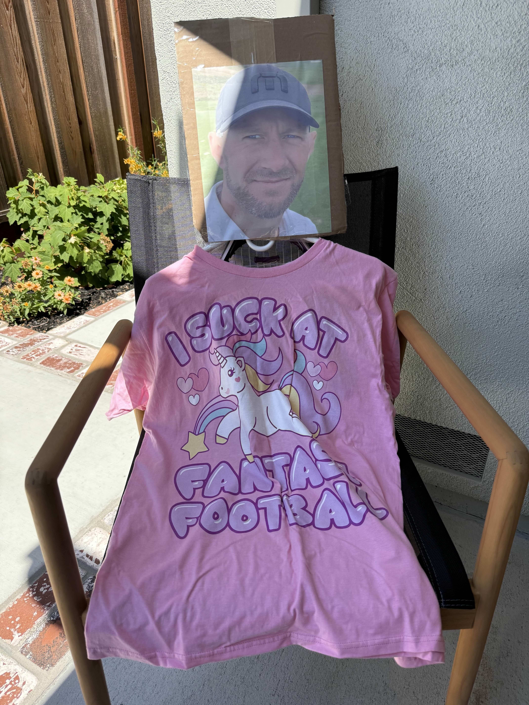

Last place: must wear the Losers Jersey at the next draft.

League By-Laws
Below is a concise overview of our league’s by-laws. These govern roster construction, scoring, waivers and fair play. Reach out to the commissioner if you have any questions!
Loser’s Jersey Rule – The last-place finisher must wear the loser’s jersey to the following year’s draft.
Mandatory Trade Rule – Each manager must make at least one trade during the season. If not, they are ineligible to win the championship.
Draft Day Attendance Rule – If you do not attend draft day (in person or via Zoom), you cannot have the 1st pick. You move down one spot until the first attending manager is eligible.
Roster Lock Rule – Teams that do not make the playoffs have their rosters locked (no waiver adds/drops or lineup changes).
NFL Scores – Last Week
Propose a Rule
We track proposals as GitHub Issues so everyone can discuss and vote. Use the buttons below to submit and review.